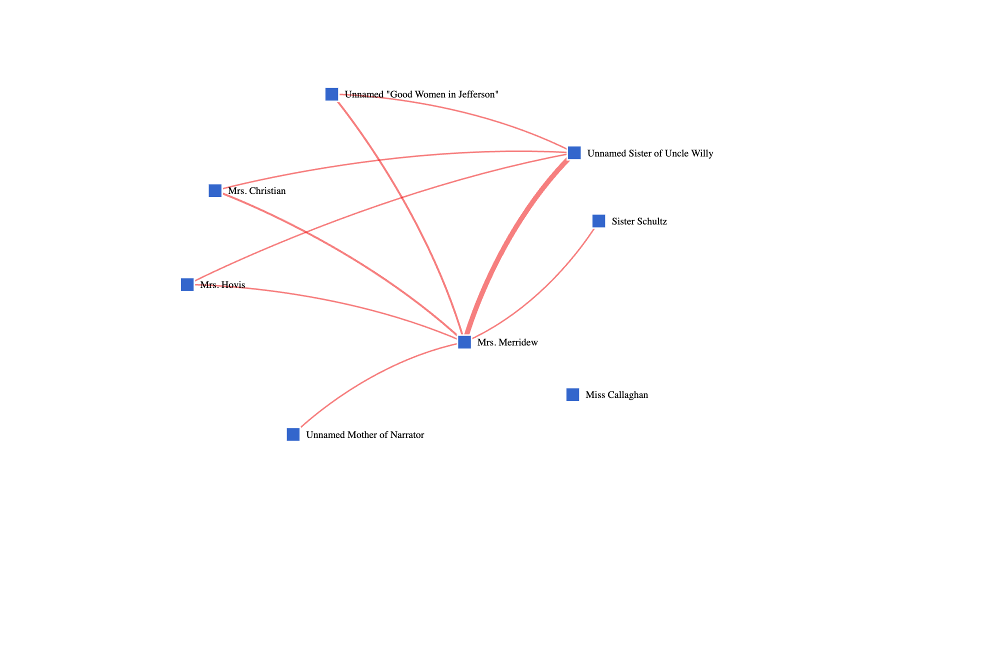

Preface
In William Faulkner's “Uncle Willy”, Uncle Willy the protagonist is constantly being forced to change as a consequence of the town’s development. The following module investigates how modernization shapes the story using:
- Map
- About the Text
- Character-Character Force Directed Graph
By the end of the lesson, students will understand how individual character choices are influenced by modernizing forces that they cannot control.
Tip
This module can be taught by itself or in conjunction with any stories that are part of the Faulkner and modernization cluster:
Activities
1. Mapping Uncle Willy‘s Journey
Using the Map tool, students are able to track each character's progression throughout the story through the characters themselves but also using the detailed landmarks. In correlation to Uncle Willy, students can follow Uncle Willy's journey on the map as he travels. As well as when clicking on the significant building and characters on the map learn more about them and their changes throughout the story.
Explore: Maps
The main map display shows all the locations and characters in the text. These events can be played using the toolbar at the bottom. Each location and character can be filtered down through the options on toolbar on the left side and the locations and characters can all be clicked to provide more information.
What makes the map for "Uncle Willy" unique is the Memphis inset that shows Uncle Willy's activity there, and, in turn, how "traditional" Jefferson is closely connected to the modernity of Memphis.
- From the Digital Yoknapatawpha homepage, select “Uncle Willy” from the bookshelf.
- Hover over the map icons until you find “Drugstore’” (
 )
) - Click on the icon
- A location record will pop up in a new window
- Read the description of the location
-
Repeat these steps for:
- “Uncle Willy” (
 )
)
“Unnamed Narrator”( ) - “Uncle Willy” (
Respond: Significance of Uncle Willy’s Presence
After reaching the map, students are able to use the display control bar on the left of the map to select which characters and land features they would like to see. By selecting one of the figures on the map, a screen pops up listing its description as well as extra information, events, and locations if applicable. Use the map to answer the following questions. Be prepared to share your answers in a small group.
- How many of the event dots are located outside of the Yoknapatawpha?
- Drugstore- What is the importance in the location of Uncle Willy’s Drugstore and Mrs. Merridew needs to get it remodeled when he is away?
- Uncle Willy - After Uncle Willy got clean from morphine, why would he start using a different addictive product?
I'm not sure what this question is asking
- Unnamed narrator - how might the unnamed narrator's unchanging age mirror some of the themes/beliefs of the narrative?
2. Context in About the Text
When using the About the Text tool, readers are able to learn relevant context to the text relevant to the idea modernity at the time and Faulkner’s personal connection to the themes. Using the real world information, readers are able to evaluate the significance of the changes being made.
Explore: About the Text
The "About the text" information provides an overview of the publication history and any important context for the text.
- Navigate to the Digital Yoknapatawpha home page
- Select “Uncle Willy” from the bookshelf
- This will open the main map display for “Uncle Willy”
- After selecting “Uncle Willy”, the page will appear with the map, display control panel, title with the contributing authors, timeline, and page correlation.
- Hover your cursor over the characters on the map to reveal their name
- Select the title with the contributing author in the left bottom corner, and the about the text should appear.
Respond: Moral Panic of Addiction in Changing Time
After reading the story, use the 'About the Text' tool, to answer the following questions and either do a class discussion or a written response to the questions.
- How does Faulkner’s own desperation to sell his stories show up in Uncle Willy’s need for a coping mechanism in the story?
- How might the presence of Uncle Willy’s drug store in The Town (1957) allude to the significance of the store to the town and it being remodeled?
- Through faulkner's interactions with addiction in his life, why is Uncle Willy being both an addict and the protagonist creating a moral panic in the town?
3. “Uncle Willy” through interactions
Using the Location-Character graph, users are able to examine how the character traits connect them together. Users are able to interpret the graph with the questions following to further understand the significant Uncle Willy has on the town.
Explore: Learning to use the Character-Graph
-
From the DY Main Menu, choose
- Visualizations
- Character-Character
- Select Uncle Willy
This graph shows how often characters are present or mentioned in the same event. A red line () between two blue boxes () shows at least one interaction, and a thicker line indicates multiple interactions. Characters with more connections are closer to the center, but, importantly, the position of characters are not fixed.
Characters who appear close together in one graph may appear far apart in another. The graph is interactive, so you can click on a character’s name to see their connections. You can also click and drag characters to reposition them.
Respond: Character Networks
-
We can get a better picture of Uncle Willy’s relationships by mapping with whom he spends the most time.
- Set Text to Uncle Willy
- Set Race to White
- Set Gender to Female
- Set Class to Upper Class
- Click “Search”
-
What do you see in the graph below?
-

Reminder: The thickness of the lines indicates how often these characters are together.
- Let’s try that again for just men.
- Set Race to blank
- Set Class to blank
- Click “Search”
- Let’s look at the novel in its entirety.
- Click “Clear”
- Set Text as Uncle Willy
- Click “Search”
Tip: Characters with more connections tend to be closer to the center. You can zoom in and out with the and buttons.
- Play around with this function for a few minutes using search parameters of your choice.
- Consider the following questions:
- How does Uncle Willy’s connection with so many of the townsfolk lead readers to believe in his significance to the town?
- How did those in higher class status effect the changes throughout the narrative?
- Does the ratio of major men to women characters in this narrative hold any significance in how Faulkner chooses to push the plot?
-
Final Product
- How does change within the community affect the town?
- Why is it important Uncle Willy has the Unnamed Narrator to follow him?
- How has technology developments impacted the outcome of the story?